| [ ()] [AdsM3 vs. AdsM3] |
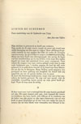
Naar boven]
Mijn dochter is getrouwd en heeft ons verlaten.
Nog steeds zie ik mijn vrouw zooals zij naast mij stond toen Adele heenging om den man te volgen. Haar alledaagsch gezicht vertrok tot een masker dat lilde als onder de striemen van een zweep. Ja, zij wil blijven zoogen tot onzen laatsten dag. Maar een hoos heeft ons uiteengejaagd: dat meisje de baan van het moederschap op en ons beiden weer naar den ouden haard toe waar dat smeulend leven moet voortgezet. Toen echter die jongen voor onze voeten gelegd werd, toen is mijn oude bedgenoot aan 't stralen
gegaan als had zij zelf gebaard en in gedachten bracht zij de hand aan hare blouse, als om die los te knoopen. Haar sloffen werd opnieuw een getrippel en haar geklaag een hooglied. En ikzelf heb mij opgericht als om tot groote daden over te gaan.
Ik moet die beroering boekstaven, want voor ons is het misschien de laatste geweest. En nog wel met spoed, vóór de eindelijke versuffing haren greep op mijn geest heeft gelegd. Want ik loop naar de zestig.
Ik ben weer eens vast overtuigd dat dit mijn laatste geschrijf zal zijn. Het gaat immers niet aan, voor iemand die vrouw en kinderen ten laste heeft, zich telkens af te zonderen om de leden van zijn gezin en zijn eigen binnenste van uit een hoek te gaan bespieden en ze een voor een onder het mes te nemen om uit hun bloed voor vreemden een filtraat
te be 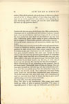
Naar boven]
reiden. Mijn plicht gebiedt mij op de brug te blijven in plaats van af en toe te komen kijken of het schip nog drijft. En moet ik na zoo'n geploeter niet telkens weer gluiperig in mijn huiskring plaats nemen, als een die niets ontheiligd, die niets op zijn geweten heeft?
Verduiveld, dat zou geen slecht begin zijn. Mijn poëtische bevliegingen zal ik voorstellen als het bereizen van een vreemd land, waarvan de lokstem mij komt tergen als ik vreedzaam bij onze kachel zit. Een land vol heerlijkheid dat mij toch geen voldoening geeft, zeker omdat er geen voldoening in mij te krijgen is. Ontevreden geleefd, ontevreden sterven.
Ik kon de eerste zinnen nu wel neerzetten, dunkt mij. En ik begin:
Ik kom thuis van een reis en vind alles voor mij gereed staan. Vrouw en kinderen hebben gedaan alsof ik niet weg was geweest en mijn vrouw heeft mijn souper opgediend. Punt. Ik herlees en ga aan 't huiveren voor die banaliteit. Zoo iets kan geen mensch schelen, dat staat vast. Zooals zij daar staat is die reis een reis geweest naar Brussel of hoogstens naar Parijs, want van hier uit is Brussel niet eens een reis. Maar zeker is het geen reis geweest naar dat heerlijke land. Ik zal dus liever thuis komen van die reis, je weet wel, of beter nog van de reis, dus van de reis bij uitnemendheid. Maar waarom ben ik zoo plotseling op reis gegaan? Doe ik dat soms meer? Natuurlijk, dáár zit hem de knoop. Eén reis kan geen kwaad en valt niet op, wel dat stelselmatig trekken, alsof het een plicht was. Voor de zóóveelste maal kom ik thuis van de reis. O.K. Nu is dat geen reis naar Parijs meer, want wat zou ik daar voortdurend gaan uitvoeren? Nu is het een rare reis, een tocht naar een vreemdsoortig oord en voor den lezer durf ik hopen dat hij nu geen aardrijkskundig preciseeren meer verwacht.
En vind alles voor mij gereed staan.
Hum. Die alles is erg overdreven. Alles roept geen enkel beeld op. Alles of niets is precies hetzelfde. Wat staat er eigenlijk gereed of beter nog wat behoorde gereed te staan 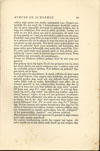
Naar boven]
indien mijn gezin een sterke tegenpartij was. Dingen natuurlijk die mij reeds bij 't binnenkomen duidelijk maken dat zij geen oogenblik gevreesd of gehoopt hebben dat ik lang zou uitblijven. Een stoel is zeker geschikt. Verder een tafel en een bed, klaar om mij te ontvangen, de tafel voor de kauwpartij en 't bed om een eind te maken aan die grap. Eindelijk mijn pantoffels en nog wel bij 't vuur om mij goed in te prenten dat dit de plaats is voor een man op jaren met een gezin op zijn geweten. Wat heeft zoo'n asthmalijder van doen in gindsche land waar misschien wel bordeelen zijn maar zeker geen behoorlijk vuur noch dito pantoffels. Dus: En weer staat mijn stoel gereed, tafel en bed gedekt, pantoffels bij 't vuur, alsof
ik iederen dag verwacht werd. Want zij hebben mij verwacht, de smeerlappen.
Vrouw en kinderen hebben gedaan alsof ik niet weg was geweest.
Dat gedaan staat mij tegen. Er zit een gemeene truc in, want het dient slechts om mij te verlossen van 't zoeken naar wat zij werkelijk gedaan hebben. Wat hebben zij gedaan? Zeggen kerel, als je kunt.
Laat ik mij even afzonderen: ik maak stilletjes de deur open en schuif binnen. Dan zeggen mijn kinderen, uit gewoonte, beleefd goeden dag, want ook een dolende hond van een vader blijft toch je vader. Beleefdheid voor alles. Als je iemand aantreft in een onbehoorlijke houding, dan doe je nog of je hem niet ziet. Dus hebben zij "dag vader" gezegd. Of beter nog "dag Pa", want "dag vader" is wel erg theatraal. Op zoo'n "dag vader" zou alleen een somber "dag kinderen" kunnen volgen en nog wel met gefronste wenkbrauwen. En ik ben allerminst van plan op een melodrama aan te sturen. Zou ik die "dag" niet samen met dien vader over boord flikkeren? Dus "Pa" in stede van "dag Pa"? Natuurlijk. Pa kan immers niet anders beteekenen dan dag Pa? Pa alleen is trouwens huiselijker, inniger, vertrouwelijker, minder vermoeiend en minder gedwongen. Iets als "schipper!" of het gemoedelijke "bakker!" van iederen ochtend.
Mijn kinderen hebben heel gewoon Pa gezegd en mijn vrouw heeft mijn souper opgediend.
Bij nadere beschouwing steekt dat souper mij tegen. Als zoo'n recidivist in het dolen recht heeft op een souper, dan 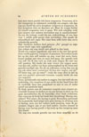
Naar boven]
kan men onzen poedel óók laten soupeeren. Trouwens, al is het voorgezette in substantie werkelijk een souper, ook dan nog zou ikzelf bij zoo'n terugkeer weigeren te soupeeren. Ik kan hoogstens eten en daarmee uit. Maar ik weiger beslist tot ritueel soupeeren over te gaan. Wie zich schuldig voelt kan immers niet nalaten bovendien nog te manifesteeren? En een die betrapt wordt bij een verkrachting, of zoo, kan voor 't zelfde geld gerust eens uitvloeken. Dat maakt de schanddaad niet erger. Het staat hem zelfs beter dan zoo'n schijnheilig gezicht.
Mijn kinderen hebben heel gewoon "Pa" gezegd en mijn vrouw heeft mijn eten opgediend.
Dat schijnt mij nog steeds niet geheel in den haak.
Wordt een souper opgediend, met eten is dat niet het geval. Eten wordt gegeven, voorgezet of genomen. Bovendien komt het op het eten zelf minder op aan, want dat zoo'n thuiskomst eindigt met eten en naar bed gaan, dat spreekt toch van zelf. En ík ben toch op zoek naar dingen die niet van zelf spreken. Mij dunkt dat mijn vrouw iets zeggen moet, wat dan ook, anders zou haar aanwezigheid op de scène niet gerechtvaardigd zijn. En als zij volkomen zweeg dan zou zij mij ook zeker niets voorzetten. Zij kon dus vragen "eet jij?" Of beter nog "eet jij soms?", want die soms sluit in dat zij aan een positief antwoord evenmin waarde hecht als aan een negatief.
Neen, zij behoorde iets anders te zeggen. Iets dat treft als een mokerslag. Iets waardoor ik pas recht tot het besef kom dat ik werkelijk thuis ben aangeland en niet in een of ander prieel van gindsche land.
Ik denk opeens aan de restanten waaruit onze soupers gewoonlijk bestaan en besluit er toe een beroep te doen op een paar specialiteiten die de huiselijke sfeer sterk evokeeren. Iets waarvan de lucht het heele huis doordringt. Haring misschien? Wel zeker, die haring is goed. Bovendien nationaal. En in gindsche land krijgt men geen haring en al kreeg men er haring, men zou het ruiken noch proeven, want de gewoonste dingen zijn er zoo heel anders. Zoodra iemand in haring weer haring proeft is hij reeds op den terugweg naar den haard.
Nu nog een tweede gerecht om een keus mogelijk en de 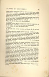
Naar boven]
vraag logisch te maken, liefst iets dat niet ruikt maar walgt, want die eene stank is voldoende. Nieren? Maar als die klein zijn en met sluwheid klaargemaakt, dan merk je 't niet eens, zeker niet op een tooneel.
Neen, geen nieren. Grooter, hooger op! Laat nog meer kandidaten aantreden. Niemand moet verlegen zijn, al zwemt hij in zijn vet of al druipt hij van 't bloed. Wie is die bleeke daar, met zijn krulhaar?
Walgelijk genoeg. Maar de regisseur vindt het ongewoon op een huiselijke tafel. Meer iets voor een restaurant.
En die dikke, die door zijn knieën zakt?
Ja lever is goed. Lever van een oud beest, als die te krijgen is.
En meteen ligt een bruine massa voor mij, midden door gesneden bij wijze van referentie, zoodat ik inzage krijg in die ingekankerde gaten die als zooveel oogholten zijn. Lever en nieren dus? Maar dat is een pleonasme, want zij komen uit den zelfden buik, waar zij buren waren. Neen, ik laat mijn haring niet los. Haring en lever. Of liever lever en haring want die A-klank is beter voor de stembuiging bij 't laatste woord.
Met lever en haring is die vrouw tenminste gewapend. Zij kan mij nu de volle laag geven. Mijn kinderen hebben dus heel gewoon Pa gezegd en mijn vrouw heeft gevraagd wat ik verkoos, lever of haring.
Wat kan iemand nu in 's hemelsnaam op zoo'n vraag antwoorden?
Niets. Want die vraag is geen vraag. Wanneer men iemand bij zijn thuiskomst geen andere keus laat dan tusschen lever en haring, dan heeft dat quasi vragen slechts voor doel beide afschuwelijke
dingen nog eens helder bij hun naam te noemen opdat hij die aan 't eten gaat goed
zou weten waar hij aan toe is. Hij kon nog wel eens met één voet in gindsche land staan en denken dat die lever geen lever is, maar een grap. To be hung by the neck is niet voldoende, maar to be hung by the neck untill death follows. Goed zoo. Nog gauw even lekker walgen voor ook die portie lever tot het verleden behoort. 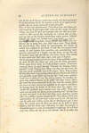
Neen, een vraag is het niet. Het staat hooger. Als men vuil
Dus: ik heb niet geantwoord. Toch dient hier misschien gezegd waarom ik gezwegen heb, want op die vraag, die geen vraag was, kon ik best antwoorden met iets dat geen antwoord is. Met verrek bij voorbeeld. In 't leven plat en brutaal zou het in dit litterair landschap zeker passen. Scheldt Othello die schat niet doodgewoon voor hoer?
Het stellen van dergelijke vragen stemt mij echter zoo verdrietig dat ik bang ben voor mijn eigen stem. Want klinkt die neerslachtig, dan jubelt de tegenstander. En klinkt zij valsch dan schaam ik mij dood. Ik heb dus niet geantwoord omdat ik niet kiezen kon tusschen een neerslachtig maar oprecht antwoord in 't bijzijn van die lever, en een dat sist of snauwt maar mij onvoldaan zou laten zitten. Dus omdat ik den moed niet had mijn eigen stem aan te hooren. 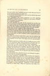
Als ik niet antwoord moet ik iets doen, of het publiek verlaat de zaal.
Ik heb dus maar een stuk van die lever genomen. Neen, geen lever meer, in Gods heiligen naam. Trouwens, waarom lever en geen haring. Waarom die haring achtergesteld? Goed. Haring dan. Maar wat dan met die lever, die mij nog steeds aankijkt met al die oogen. Neen. Weg er mee. Ik heb jullie heel even noodig gehad als een bloedroode vlek in een grisaille, maar blijft mij van het lijf. Vade retro, satanas. Good bye to both of you. En wel te rusten. Er stonden immers nog andere dingen op de tafel? Als mijn vrouw alleen die twee bij name genoemd heeft dan was het omdat alleen die
twee in staat waren het publiek in de zaal te schokken, de haring door die lucht en de lever door die oogen. Verwacht het publiek geen emotie voor zijn geld? Trouwens, weet een mensch wat hij in zoo'n stemming eet? Als hij daar zit met een brok in de keel dat bijna niets doorlaat zoodat alles een zelfden grijzen smaak heeft? Niet alleen wil ik niet antwoorden, ik wil niet eens weten wat ik eet. Als dat kon zou ik zelfs niet willen weten dat ik überhaupt aan 't eten ben. En vooral vrees ik door een keus op de tafel te laten blijken dat het thuis zijn volkomen tot mijn bewustzijn is doorgedrongen en mijn tevredenheid wegdraagt. Ik wil daar nog wat zitten als zat ik in een droom. Als ik in mijn rug
Welnu dan, ik heb zwijgend mijn maag gevuld.
Goedgekeurd. Het vullen van die maag, bij wijze van souper, is een verdiende straf voor dat dolen. En die maag, ook al is het de mijne, herinnert mij nog heel even aan die lever die,
na zijn taak vervuld te hebben, reeds wegdoezelt in den achtergrond.
Dus: heb ik de hand uitgestoken naar wat het dichtst bij stond en zwijgend mijn maag gevuld. Zoo is het. En ter wille van de poëzie zal ik maar verzwijgen dat het mij gesmaakt heeft.
Zij schijnen geweten te hebben dat ik terugkeeren zou en dat vind ik vervelend. Maar had ik mij boos gemaakt dan zou ik, om logisch te zijn, weer hebben moeten opstappen.
Alweer een gruwel, zooals het daar staat. Neen, man, zij schijnen dat niet geweten te hebben, zij wisten het. Zij waren er zeker van. Zij waren er gerust in. On ne te gobe pas. Dat dolen behoort tot je onschadelijke excentriciteiten, waar zij al jaren pret in hebben. Ik zit nog niet aan tafel of zij kaarten reeds door. Hun gerustheid, hun zekerheid dat ik ook ditmaal terugkeeren zou, heb ik vervelend gevonden.
Neen, niet vervelend, vriendlief. Dat woord is zoo ongezouten dat het zelf vervelend is. Ik zou het misschien vervelend gevonden hebben indien zij een oogenblik hadden gedacht dat ik nooit meer terugkeeren zou, dus dat ik stapelgek geworden was. Maar hun gerustheid, hun zekerheid heeft mij beschaamd en diep gegriefd. Gegriefd of diep gegriefd? Gegriefd is altijd diep. Maar de regisseur laat diep toch 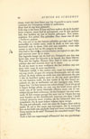
Naar boven]
staan, want dat leest beter zegt hij. Gegriefd is zoo'n woord waaraan een lettergreep schijnt te ontbreken.
Echt slap is dat boos. Ik kan mij boos maken als zij de kachel laten uitgaan, maar had ik gereageerd, wat ik niet gedaan heb, dan hadden zij wat te hooren gekregen. Een storm, mijnheer. Een geloei. Een gebulder. Dus: maar was ik aan 't bulderen gegaan. Nu, wat zou er op dat fameus gebulder gevolgd zijn? Stilte natuurlijk en verder niets, want ik denk er niet aan mijn huisraad stuk te slaan. Ook niet aan ranselen, want mijn vrouw is mij te lief en die jongens te sterk.
Dan had er dus niet op overgeschoten, om logisch te zijn, dan met weerzin weer op te staan.
Dat logische hangt mij de keel uit. Onlogisch zou dan nog beter zijn, want het logische is de haard, dus thuis blijven. Weg met die logika. Heraus. Dus: had er niets op overgeschoten dan met weerzin weer op te staan.
Ik zal nu maar in eens verklaren dat het trekken mij niet meer lokt, want ik moet opschieten.
Volkomen eerlijk is dat anders niet, want het trekken lokt mij nog steeds, al gaat
die neiging diminuendo, net als mijn eetlust. Ik denk echter nu reeds aan mijn kleinzoon die aan 't slot de hoofdrol spelen moet en die mij moet opwekken tot een laatsten tocht. En hoe vaster ik bij den haard geankerd zit, des te treffender zal zijn ingrijpen zijn. Doorliegen dus. 't Is hier immers een schouwburg? En in dit geval is liegen heilige plicht, ter eere van dat kind wiens pad ik reeds van af de eerste bladzijde effenen moet, ook al verschijnt hij pas heel achteraan, als het bouquet van een vuurwerk. Ik heb vroeger gezegd dat men van in 't begin het oog moet houden op het slotakkoord, waarvan iets door 't heele verhaal geweven moet worden, als het leitmotief door een symphonie. En ik moet koken volgens eigen recept.
Nu nog wat schmink, want zoo staat die leugen daar toch te naakt. Ik zal er dus maar aan toevoegen: dat ik vermoeid ben en het licht van gindsche land niet meer verdragen kan. Geen reactie in de zaal? Niemand die zonnebril roept? Nogmaals O.K.
Toch is het zoo ongevraagd affirmatief dat een psychologi 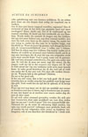
Naar boven]
sche opheldering niet zou kunnen uitblijven. Ik zie echter geen kans om een leugen door uitleg tot waarheid om te werken.
Zou ik hier niet liever vragend vertellen, regisseur? Ben ik vermoeid of kan ik het licht van gindsche land niet meer verdragen? Beter, dunkt mij. Net of ik verdwaasd op het tooneel verschijn, de hand aan het voorhoofd, als een Hamletje. Wordt onder die opsmuk de leugen van dat trekken, dat mij niet meer lokken zou, nog door iemand ontdekt, dan stuit hij toch even later op die naïeve vraag. En omdat het een vraag is, omdat hij dus mijn lot in handen krijgt, zegt hij allicht ja. Want al jouwt hij gaarne, toch draagt hij liever niet de verantwoordelijkheid voor 't vallen van 't scherm. Zelf ben ik echter nog niet voldaan. Om twijfel verder uit te sluiten, al twijfelt nu niemand meer behalve ikzelf, zal ik er nog aan toevoegen dat ik voel dat van een volgenden tocht niets meer terecht komt. Voel is goed, want wat ik persoonlijk voel kan niemand controleeren. Dat gaat een ander niet aan. Ik voel dat ik naar zee moet, zegt die vrouw. En die jongen voelt dat hij in dat examen niet slagen zal. Ik voel in ieder geval dat van een verderen tocht niets meer terecht komt. In ieder geval beteekent dat ik dat voel ook al voelt een ander dat ik dat niet voel. Het sluit alle verdere discussie uit. Waarom heb je dat gedaan? Dáárom.
En zoo is het goed ook. Is het zoo niet waar, dan is het zoo toch goed. Als ik maar tevreden ben en verder zorg dat het publiek waar krijgt naar zijn geld. Toch wordt het nu tijd dat ik ophoud, of ik bewijs te veel. Want mij rest nog maar net de tijd om eindelijk met vrouw en kinderen wat mee te leven, mij te koesteren aan de warmte van den haard en te werken voor onzen ouden dag die voor de deur staat.
Er zal toch zeker niemand gevonden worden die zich niet laat vermurwen door mijn nooddruft
om voor dien ouden dag van ons aan 't werk te gaan? Dat zou onmenschelijk zijn. Niemand die op de scène de erkenning blijft eischen van mijn nog steeds positief verlangen naar gindsche land, ook al zouden bij een volgenden tocht vrouw en kinderen verhongeren, ook al zou daardoor dat kleinkind in 't heele stuk 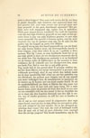
Naar boven]
niets te doen krijgen? Men moet toch inzien dat ik, zoo lang ik ginder dwaalde, mijn kinderen niet opgevoed maar van hen genoten heb, voor mijn vrouw niet gezorgd maar met haar gespeeld. Is dat geen doorslaand argument? Het publiek moet toch meegaand zijn, anders kan ik opdoeken. Plicht gaat immers boven waarheid? Nu vindt die regisseur weer dat met mijn kinderen gespeeld en van mijn vrouw genoten beter is dan van mijn kinderen genoten en met mijn vrouw gespeeld. Om oprecht te kunnen spelen, zegt hij, moet minstens een van de partners jong zijn. En de zaal zou dat spelen van dat koppel op jaren niet slikken.
Nu mijzelf stevig aan den haard gemetseld om van dat kind, dat mijn boeien breken moet, een bovenaardsche kracht te doen uitgaan, want daar reken ik op om 't publiek te doen opstaan. Hier bij 't vuur, in onze kooklucht, komt het er op aan mijn plicht te doen als een doodgewoon mannetje dat ik ten slotte ben. Dat doodgewoon mannetje is er op berekend om de besten onder de kijklustigen op dat moment te doen verklaren dat ik volstrekt niet zoo doodgewoon ben, maar een heele Piet. Stel je voor dat ze mij gelijk geven.
Nog steeds heb ik een gevoel alsof ik pensum verdien omdat het thuis blijven een beetje intempestief is geweest, niet voldoende gewettigd, alsof ik nog steeds den indruk maak dat ik daar moedwillig blijf zitten om met het optreden van dat kleinkind, dat gedaan
moet krijgen wat ik van mijzelf niet meer verkrijgen kon, de toeschouwers te epateeren als de boeren op de kermis met een kind zonder hoofd. Ik zal de noodzakelijkheid om thuis te blijven dus nog maar wat aandikken, want ik kan toch niet meer terug. Dit is mijn laatste kans, want zij groeien als kool. Een heeft al een snor en een ouwelijke trek om den mond. Is het nu duidelijk dat zij in staat zijn den kapitein desnoods aan den dijk te zetten, met of zonder pensioen, en zelf het roer in handen te nemen?
Als ik mij nu niet aanpas word ik uitgestooten door mijn eigen broed, want zij zien in mijn dolen een verraad en scharen zich zwijgend om hun moeder. Zie je dat dreigend gezelschap daar staan? Dat wijf, dat tóch al beklaagd wordt door de zaal, ook al had zij geen dolenden vent, omringd door die stevige jongens? Een bende kannibalen, zeg ik. En 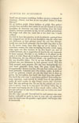
Naar boven]
ikzelf een gevangen zendeling. Stellen zij geen zwijgend ultimatum: "Ouwe, wat ben je nu van plan? Dolen of thuis blijven?"
En zij hebben gelijk. Zeker hebben zij gelijk. Hoe gedecideerder hun optreden, hoe vaster ik aan den haard zit en hoe heerlijker de slotscène van mijn bevrijding door dat kind. Binden, ketenen moesten zij mij, tot het publiek protesteert. Hij krijgt toch alles los, want dat is het doel van 't heele verhaal.
Zoo heb ik daar dan gezeten, in die kooklucht, omringd door dat zwijgend rot, tot ik op een heerlijken dag die schat van een kleinzoon in huis gewaar werd, die aan hun dwingelandij een eind heeft gemaakt. Die heerlijke dag sluit in dat ik, als zuster Anna, naar dien dag zat uit te kijken. 't Is misschien sterker dat mijn bevrijding bewerkt wordt tegen mijn eigen wil. Hoe knusser ik bij den haard zat, met of zonder ketenen, des te magischer de kracht die mij nogmaals de baan opjaagt. Heerlijk er uit, heilloos in de plaats en de zaak is in orde. Maar als ik heilloos accepteer dan heeft ook die kleinzoon, die erg officieel klinkt, een qualificatie noodig van dezelfde kleur. Tot ik op een heilloozen dag dat mormel van een kleinzoon in huis gewaar werd. Wel een flink mormel, mais passons. Die aan hun dwingelandij een eind heeft gemaakt. Kom, kom. Die grap wordt flauw. Dwingelandij? Rotten was het. Die aan hun rotten een eind heeft gemaakt. Volstrekt niet. Ons rotten, vader. Je hebt er jezelf toe geleend, vriend, om ook dat kind iets te doen te geven. En bovendien, hoe heeft dat kind hem dat gelapt? Hoe heeft hij zich voor 't eerst laten gelden? Eenvoudig genoeg, regisseur, want terwijl ik schrijf hoor ik zijn gekraai onder de tafel zoodat ik mijn lompe voeten niet verzetten durf. Met zijn gekraai dus. En om bij dat geluid ook iets te zien te geven, voeg ik er nog gauw die bloote billen bij, in de vaste overtuiging dat die in den smaak zullen vallen. Die met zijn gekraai en zijn bloote billen aan ons rotten een eind heeft gemaakt.
Het slot volgt van zelf. Terwijl heel de zaal opstaat zijn mijn boeien verkoold tot asch en arm in arm zijn wij opgestapt naar dat land waar die gouden vogel jubelt, véél hooger dan de leeuwerik.
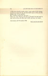
Naar boven]
't Was een uittocht zonder risico, want onder al die huisgenooten is er niet één die zijn bek durft open te doen als die jongen zijn wil laat gelden.
Bij 't herlezen komt het mij voor....
Schei uit, vent. Word je niet ijl in je hoofd? Zet dat kind in zijn stoel en laat die tekst met vrede, op hoop van zegen.
Antwerpen, 22 November 1934
WILLEM ELSSCHOT